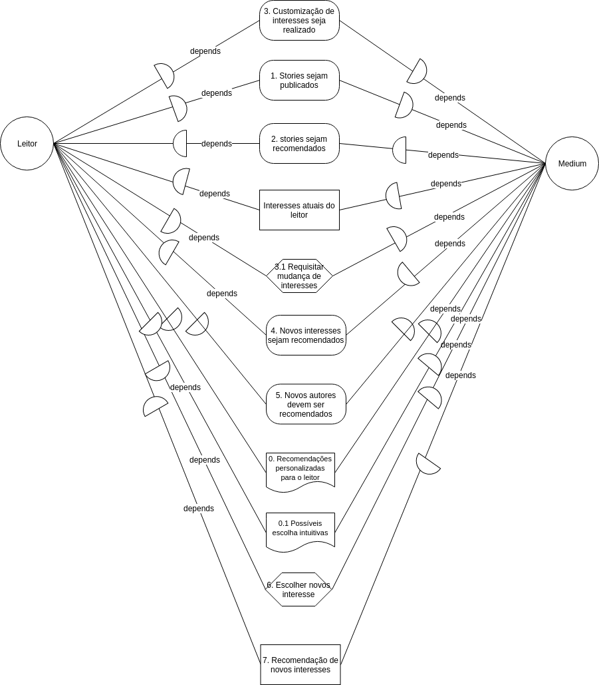
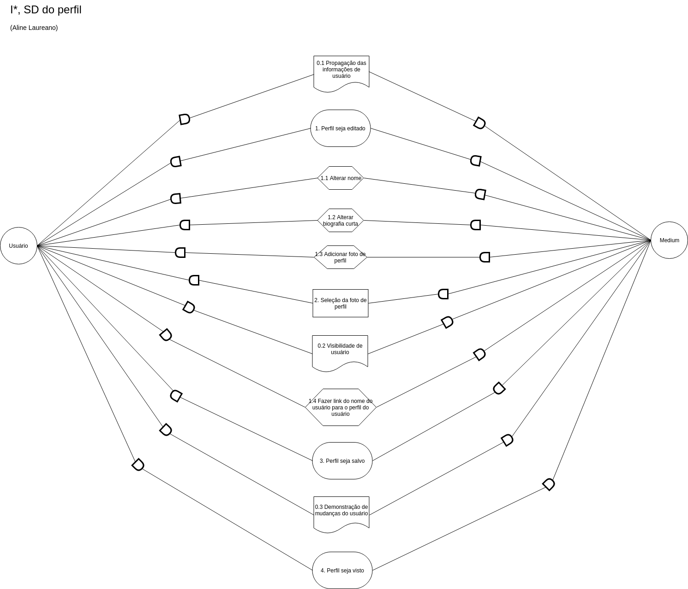
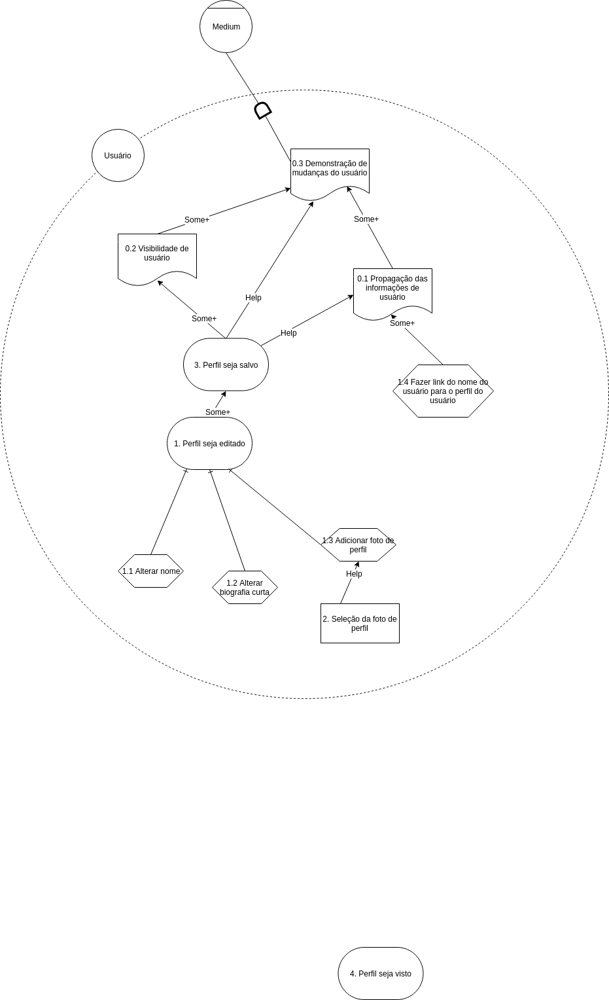
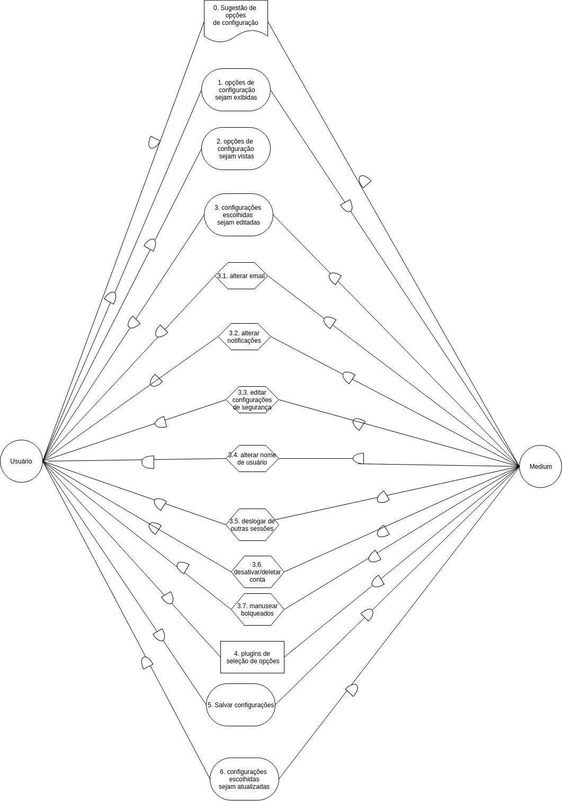
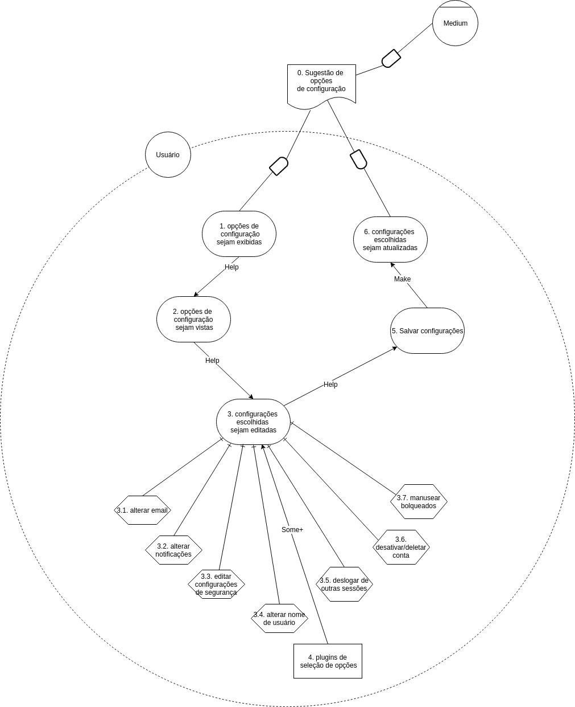

Versionamento de edições
| Data | autor | Descrição | Versão |
|---|---|---|---|
| 04/06/2019 | william elias alves | adição de introdução e objetivos | 0.1 |
| 04/06/2019 | william elias alves | adição de metodologia e resultados | 0.2 |
| 05/06/2019 | Matheus Blanco | Adição inicial dos checklists e verificações | 0.3 |
| 06/06/2019 | Matheus Blanco | Refatoração dos checklists | 0.4 |
| 07/06/2019 | Matheus Blanco | Refatoração das verificações, inclusão de pareceres | 0.5 |
| 10/07/2019 | Matheus Blanco | Adição desta tabela ao documento | 0.6 |
| 10/07/2019 | Matheus Blanco | Adição dos I*'s refatorados | 0.7 |
Introdução
Verificação é uma análise de modelos cuja uma tarefa pode ser desempenhado por pessoas como por softwares. Tem como objetivo assegurar que o sistema produzido atenda às especificações estabelecidas.
Objetivos
Para a realização da verificação, foi utilizado o método de inspeção de Fagan. Esse tipo de abordagem atua na verificação de artefatos de elicitação e sem uma estrutura própria, ou produzidos por Engenheiros de Software/Requisitos, o que o configura, nesse caso, como uma lista de requisitos.
Metodologia
Para a realização da análise dos I*'s com ênfase na verificação, foi escolhida a técnica de inspeção. Os passos a serem realizados para inspeção são os seguintes:
- Definição dos critérios de aceitação: Para que haja um padrão estabelecido de como o conteúdo do backlog do produto deva se parecer;
- Análise geral dos I*s
Resultados
Após todo processo criativo por trás da verificação por meio da inspeção, os seguintes resultados foram obtidos:
-
Criação de 11 critérios de aceitação para os I SD e 12 critérios de aceitação para os I SR;
-
Verifição dos 14 I*'s presentes na Wiki e Drive.
-
Foram refatorados somente os I*'s que tinham a maior quantidade de déficits.
Checklist I* SD
| Código | Item | Descrição |
|---|---|---|
| 1 | Atores | Escolha apropriada dos atores existentes de acordo com o contexto |
| 2 | Dependências | Avaliação e representação apropriada das relações de dependências de cada balão , de acordo com o contexto |
| 3 | Relações | Apenas um item de relacionamento entre os atores, não podendo haver uma sequência de metas e Resources/tasks e resources/metas e tasks |
| 4 | Hardgoal | Metas escritas na voz passiva e condizentes com a operacionalização adequada ao contexto |
| 5 | Tasks | Linguagem apropriada, no infinitivo, e sucintas para representar uma tarefa pequena e operacionalizável |
| 6 | Resources | Linguagem apropriada, utilizando-se de substantivos, de recursos exteriores e utiliźaveis na tarefa descrita |
| 7 | Softgoals | Linguagem apropriada, com utilização de substantivos, e softgoals apropriados com o contexto de requisito não funcional da situação do artefato |
| 8 | Sequência subjetiva | Existência intrinseca de um processo sequêncial |
| 9 | Sequência objetiva | Numeração da ordem dos balões existentes |
| 10 | Rastreabilidade | Existência de rastreabilidade no artefato |
| 11 | Qualidade | Quantidade adequada ao contexto, sem o leitor ser capaz de notar imediatamente a falta de algum elemento de requisito faltante |
Checklist I* SR
| Código | Item | Descrição |
|---|---|---|
| 1 | Atores | Escopo dos atores condizente com a realidade da situação |
| 2 | Ligações | Avaliação e representação apropriada das relações dos itens, levando em consideração o seu impacto geral |
| 3 | Relações | Seguimento correto das relações e seus entendimentos de decomposição e sequenciamento |
| 4 | inicialização | Inicialização do percurso a partir de um softgoal/requisito não funcional, terminando em sua operacionalização |
| 5 | Hardgoal | Metas escritas na voz passiva e condizentes com a operacionalização adequada ao contexto |
| 6 | Tasks | |
| 7 | Resources | Linguagem apropriada, utilizando-se de substantivos, de recursos exteriores e utiliźaveis na tarefa descrita |
| 8 | Softgoals | Linguagem apropriada, com utilização de substantivos, e softgoals apropriados com o contexto de requisito não funcional da situação do artefato |
| 9 | Sequência subjetiva | Existência intrinseca de um processo sequêncial |
| 10 | Sequência objetiva | Numeração da ordem dos balões existentes |
| 11 | Rastreabilidade | Existência de rastreabilidade no artefato |
| 12 | Qualidade | Quantidade adequada ao contexto, sem o leitor ser capaz de notar imediatamente a falta de algum elemento de requisito faltante |
Tabelas de avaliação dos I*'s v1
Responsáveis: Matheus Blanco e William Elias
Publicações
I* Publicações SD V2.0
| Código | Item | Cumprimento | Parecer |
|---|---|---|---|
| 1 | Atores | [sim] | Atores condizentes com o contexto, correto |
| 2 | Dependências | [sim] | Dependências estão plausíveis de acordo com o contexto, correto |
| 3 | Relações | [sim] | Inexistência de dois elementos numa mesma dependência, correto |
| 4 | Hardgoals | [sim] | hardgoals com linguagem correta e operacionalizáveis |
| 5 | Tasks | [não] | Falta de linguagem no infinitivo |
| 6 | Resources | [sim] | Linguagem correta e contexto adequado |
| 7 | Softgoals | [sim] | condizível com requisito não funcional e linguagem correta |
| 8 | Sequência Subjetiva | [não] | falta de ordem subjetiva |
| 9 | Sequência Objetiva | [não] | falta de numeração |
| 10 | Rastreabilidade | [não] | falta identificação de rastreabilidade |
| 11 | Qualidade | [sim] | I* com elementos adequados ao contexto |
I* Publicações SR-Usuário V2.0
| Código | Item | Cumprimento | Parecer |
|---|---|---|---|
| 1 | Atores | [sim] | escopo de ator bem definido |
| 2 | Ligações | [não] | falta de impactos em certas relações |
| 3 | Relações | [sim] | decomposição e sequenciamento adequados |
| 4 | Inicialização | [sim] | inicia com um softogoal |
| 5 | Hardgoals | [sim] | hardgoals com linguagem correta e operacionalizáveis |
| 6 | Tasks | [não] | Falta de linguagem no infinitivo |
| 7 | Resources | [sim] | Linguagem correta e contexto adequado |
| 8 | Softgoals | [sim] | condizível com requisito não funcional e linguagem correta |
| 9 | Sequência Subjetiva | [sim] | sequência subjetiva identificável |
| 10 | Sequência Objetiva | [não] | falta de numeração |
| 11 | Rastreabilidade | [não] | falta identificação de rastreabilidade |
| 12 | Qualidade | [sim] | I* com elementos adequados ao contexto |
I* Publicações SR-Medium V2.0
| Código | Item | Cumprimento | Parecer |
|---|---|---|---|
| 1 | Atores | [sim] | escopo de ator bem definido |
| 2 | Ligações | [sim] | impactos condizentes |
| 3 | Relações | [sim] | falta de decomposição mas sequenciamento adequados |
| 4 | Inicialização | [sim] | inicia com um softogoal |
| 5 | Hardgoals | [sim] | hardgoals com linguagem correta e operacionalizáveis |
| 6 | Tasks | [não] | tarefas grandes demais para serem tasks |
| 7 | Resources | [não] | inexistente |
| 8 | Softgoals | [sim] | condizível com requisito não funcional e linguagem correta |
| 9 | Sequência Subjetiva | [sim] | sequência subjetiva identificável |
| 10 | Sequência Objetiva | [não] | falta de numeração |
| 11 | Rastreabilidade | [não] | falta identificação de rastreabilidade |
| 12 | Qualidade | [sim] | I* com elementos adequados ao contexto |
Stories
I* Stories SD V2.0
| Código | Item | Cumprimento | Parecer |
|---|---|---|---|
| 1 | Atores | [sim] | Atores condizentes com o contexto, correto |
| 2 | Dependências | [sim] | Falta de uma dependência |
| 3 | Relações | [sim] | Inexistência de dois elementos numa mesma dependência |
| 4 | Hardgoals | [sim] | hardgoals com linguagem correta e operacionalizáveis |
| 5 | Tasks | [sim] | linguagem no correta e operações pequenas |
| 6 | Resources | [não] | resource de monetização confuso |
| 7 | Softgoals | [sim] | condizível com requisito não funcional e linguagem correta |
| 8 | Sequência Subjetiva | [sim] | ordem subjetiva notável |
| 9 | Sequência Objetiva | [não] | falta de numeração |
| 10 | Rastreabilidade | [não] | falta identificação de rastreabilidade |
| 11 | Qualidade | [sim] | I* com elementos adequados ao contexto |
I* Stories SR V2.0
| Código | Item | Cumprimento | Parecer |
|---|---|---|---|
| 1 | Atores | [não] | apenas um ator definido |
| 2 | Ligações | [sim] | impactos demonstrados |
| 3 | Relações | [sim] | decomposição e sequenciamento adequados |
| 4 | Inicialização | [sim] | inicia com um softogoal |
| 5 | Hardgoals | [sim] | hardgoals com linguagem correta e operacionalizáveis |
| 6 | Tasks | [sim] | linguagem correta e adequados ao contexto |
| 7 | Resources | [não] | resource de monetização confuso |
| 8 | Softgoals | [sim] | condizível com requisito não funcional e linguagem correta |
| 9 | Sequência Subjetiva | [sim] | sequência subjetiva identificável |
| 10 | Sequência Objetiva | [não] | falta de numeração |
| 11 | Rastreabilidade | [não] | falta identificação de rastreabilidade |
| 12 | Qualidade | [sim] | I* com elementos adequados ao contexto |
Interesses
I* Interesses SD V1.0
| Código | Item | Cumprimento | Parecer | Erros consertados na versão seguinte? |
|---|---|---|---|---|
| 1 | Atores | [sim] | Atores condizentes com o contexto, correto | - |
| 2 | Dependências | [sim] | dependências corretas ao contexto | - |
| 3 | Relações | [sim] | Inexistência de dois elementos numa mesma dependência | - |
| 4 | Hardgoals | [não] | alguns hardgoals com linguagem ativa ao invés de passiva | sim |
| 5 | Tasks | [não] | linguagem fora do infinitivo | sim |
| 6 | Resources | [não] | resources que poderiam ser softgoals | sim |
| 7 | Softgoals | [sim] | condizível com requisito não funcional e linguagem correta | - |
| 8 | Sequência Subjetiva | [sim] | ordem subjetiva notável | - |
| 9 | Sequência Objetiva | [não] | falta de numeração | sim |
| 10 | Rastreabilidade | [não] | falta identificação de rastreabilidade | não |
| 11 | Qualidade | [sim] | I* com elementos adequados ao contexto | - |
I* Consertado

I* Interesses SR V1.0
| Código | Item | Cumprimento | Parecer | Erros consertados na versão seguinte? |
|---|---|---|---|---|
| 1 | Atores | [sim] | ator e agente definidos | - |
| 2 | Ligações | [sim] | alguns impactos em certas ligação não foram demonstrados | - |
| 3 | Relações | [sim] | decomposição e sequenciamento adequados | - |
| 4 | Inicialização | [não] | não foi possível identificar se onde o SR começou, logo não se soube dizer se começa com o softgoal ou não | sim |
| 5 | Hardgoals | [sim] | hardgoals com linguagem correta e operacionalizáveis | - |
| 6 | Tasks | [sim] | linguagem correta e adequados ao contexto | - |
| 7 | Resources | [sim] | resource adequados ao contexto | - |
| 8 | Softgoals | [não] | condizível com requisito não funcional mas linguagem parecendo mais com a de 'claims' em NFR | sim |
| 9 | Sequência Subjetiva | [sim] | sequência subjetiva identificável | - |
| 10 | Sequência Objetiva | [não] | falta de numeração | sim |
| 11 | Rastreabilidade | [não] | falta identificação de rastreabilidade | não |
| 12 | Qualidade | [sim] | I* com elementos adequados ao contexto, entretanto está pequeno | - |
I* Consertado

Perfil
I* Perfil SD V2.0
| Código | Item | Cumprimento | Parecer | Erro consertado na versão seguinte? |
|---|---|---|---|---|
| 1 | Atores | [sim] | Atores condizentes com o contexto, correto | - |
| 2 | Dependências | [sim] | dependências corretas ao contexto | - |
| 3 | Relações | [sim] | Inexistência de dois elementos numa mesma dependência | - |
| 4 | Hardgoals | [sim] | hardgoals com linguagem correta e adequados, entretanto poucos hardgoals | - |
| 5 | Tasks | [sim] | linguagem correta e adequados ao contexto | - |
| 6 | Resources | [sim] | resources adequados ao contexto e com a linguagem correta | - |
| 7 | Softgoals | [não] | softgoal parecido com um hardgoal | sim |
| 8 | Sequência Subjetiva | [sim] | ordem subjetiva notável, com exceção de alguns elementos fora de ordem, como o primeiro hardgoal | - |
| 9 | Sequência Objetiva | [não] | falta de numeração | sim |
| 10 | Rastreabilidade | [não] | falta identificação de rastreabilidade | sim |
| 11 | Qualidade | [não] | I* com elementos adequados ao contexto, entretanto pequeno | sim |
I* Consertado

I* Perfil SR-Usuário V1.0
| Código | Item | Cumprimento | Parecer | Erro consertado na versão seguinte? |
|---|---|---|---|---|
| 1 | Atores | [sim] | ator definidos para o primeiro SR | - |
| 2 | Ligações | [não] | falta de impactos demonstrados | sim |
| 3 | Relações | [sim] | decomposição e sequenciamento adequados, apesar de poucos | - |
| 4 | Inicialização | [não] | não inicia com um softgoal | sim |
| 5 | Hardgoals | [sim] | hardgoals com linguagem correta e operacionalizáveis, apesar de poucos | - |
| 6 | Tasks | [sim] | linguagem correta e adequados ao contexto | - |
| 7 | Resources | [sim] | resource adequados ao contexto | - |
| 8 | Softgoals | [não] | inexistente | sim |
| 9 | Sequência Subjetiva | [sim] | sequência subjetiva identificável | - |
| 10 | Sequência Objetiva | [não] | falta de numeração | sim |
| 11 | Rastreabilidade | [não] | falta identificação de rastreabilidade | sim |
| 12 | Qualidade | [não] | muito pequeno | sim |
I* Perfil SR-Medium V1.0
| Código | Item | Cumprimento | Parecer | Erro consertado na versão seguinte? |
|---|---|---|---|---|
| 1 | Atores | [sim] | ator definidos para o primeiro SR | - |
| 2 | Ligações | [sim] | um impacto não foi demonstrado | - |
| 3 | Relações | [não] | falta de decomposição, mas sequenciamento adequados | sim |
| 4 | Inicialização | [sim] | inicializado com um softgoal | - |
| 5 | Hardgoals | [sim] | hardgoals com linguagem correta e operacionalizáveis, entretanto poucos | - |
| 6 | Tasks | [sim] | linguagem correta e adequados ao contexto | - |
| 7 | Resources | [sim] | inexistente | - |
| 8 | Softgoals | [não] | condizível com requisito não funcional | sim |
| 9 | Sequência Subjetiva | [sim] | sequência subjetiva identificável | - |
| 10 | Sequência Objetiva | [não] | falta de numeração | sim |
| 11 | Rastreabilidade | [não] | falta identificação de rastreabilidade | sim |
| 12 | Qualidade | [não] | muito pequeno | sim |
I* Consertado

Pesquisar Conteúdo
I* Pesquisar Conteúdo SD V2.0
| Código | Item | Cumprimento | Parecer |
|---|---|---|---|
| 1 | Atores | [sim] | Atores condizentes com o contexto, correto |
| 2 | Dependências | [sim] | dependências corretas ao contexto |
| 3 | Relações | [sim] | Inexistência de dois elementos numa mesma dependência |
| 4 | Hardgoals | [não] | hardgoals com linguagem incorreta, sendo que apenas um deles está em voz passiva |
| 5 | Tasks | [não] | linguagem invertida com hardgoals |
| 6 | Resources | [não] | resources parecidos com hardgoals/softgoals |
| 7 | Softgoals | [sim] | softgoals adequados |
| 8 | Sequência Subjetiva | [sim] | ordem subjetiva notável, com exceção de alguns elementos fora de ordem, a partir da metade do fluxo |
| 9 | Sequência Objetiva | [não] | falta de numeração |
| 10 | Rastreabilidade | [não] | falta identificação de rastreabilidade |
| 11 | Qualidade | [sim] | I* com elementos adequados ao contexto |
I* Pesquisar conteúdo SR V2.0
| Código | Item | Cumprimento | Parecer |
|---|---|---|---|
| 1 | Atores | [não] | apenas um ator trabalhado no sr |
| 2 | Ligações | [não] | falta de impactos demonstrados |
| 3 | Relações | [sim] | decomposição e sequenciamento adequados, apesar de poucos |
| 4 | Inicialização | [sim] | inicia com um softgoal, entretanto o artefato indica tal de maneira um pouco confusa |
| 5 | Hardgoals | [não] | hardgoals possuem linguagem invertida com tasks |
| 6 | Tasks | [não] | tasks possuem linguagem invertida com hardgoals |
| 7 | Resources | [sim] | inexsistente |
| 8 | Softgoals | [não] | softgoals adequados |
| 9 | Sequência Subjetiva | [sim] | sequência subjetiva identificável |
| 10 | Sequência Objetiva | [não] | falta de numeração |
| 11 | Rastreabilidade | [não] | falta identificação de rastreabilidade |
| 12 | Qualidade | [sim] |
Configurações
I* Configurações SD V1.0
| Código | Item | Cumprimento | Parecer | Erro consertado na versão seguinte? |
|---|---|---|---|---|
| 1 | Atores | [sim] | Atores condizentes com o contexto, correto | - |
| 2 | Dependências | [sim] | dependências corretas ao contexto | - |
| 3 | Relações | [não] | Existência de dois elementos numa mesma dependência | sim |
| 4 | Hardgoals | [sim] | hardgoals com linguagem correta, com exceção do último | - |
| 5 | Tasks | [não] | tarefas que poderiam ser hardgoals | sim |
| 6 | Resources | [sim] | resources adequados, entretanto poderia ser decomposto | - |
| 7 | Softgoals | [sim] | adequado | - |
| 8 | Sequência Subjetiva | [sim] | ordem subjetiva notável, com exceção de alguns elementos fora de ordem | - |
| 9 | Sequência Objetiva | [não] | falta de numeração | sim |
| 10 | Rastreabilidade | [não] | falta identificação de rastreabilidade | não |
| 11 | Qualidade | [não] | I* com apenas alguns elementos adequados ao contexto | sim |
I* Consertado

I* Configurações SR V1.0
| Código | Item | Cumprimento | Parecer | Erro Consertado na versão seguinte? |
|---|---|---|---|---|
| 1 | Atores | [não] | apenas um ator trabalhado no sr | sim |
| 2 | Ligações | [sim] | impactos demonstrados | - |
| 3 | Relações | [não] | decomposição não explícita | sim |
| 4 | Inicialização | [sim] | inicia com um softgoal | - |
| 5 | Hardgoals | [sim] | hardgoals com linguagem correta, com exceção do último | - |
| 6 | Tasks | [não] | tarefas que poderiam ser hardgoals | sim |
| 7 | Resources | [sim] | resources adequados, entretanto poderia ser decomposto | - |
| 8 | Softgoals | [sim] | adequado | - |
| 9 | Sequência Subjetiva | [sim] | sequência subjetiva identificável | - |
| 10 | Sequência Objetiva | [não] | falta de numeração | sim |
| 11 | Rastreabilidade | [não] | falta identificação de rastreabilidade | não |
| 12 | Qualidade | [sim] | - |
I* Consertado
